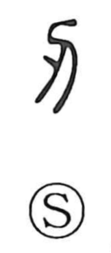

刃

Kun: ha, yaiba | On: jin, nin
blade ・ edge ・ tooth
Explanation
刃 adds a small flash of light to 刀, a knife. The glint marks the sharp cutting edge. The graph names that edge or blade, and can also refer more broadly to an edged weapon or cutting implement.